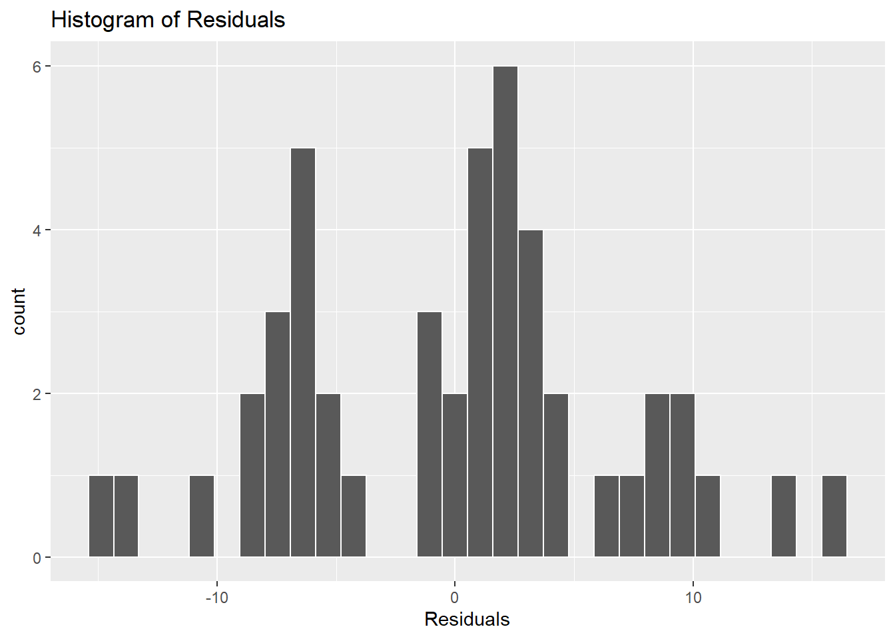

Linear regression diagnostics in R with lindia package
Regression diagnostics is the part of regression analysis whose objective is to investigate if the calculated model and the assumptions we made about the data and the model, are consistent with the recorded data. These diagnostics include graphical and numerical tools for checking the adequacy of the assumptions with respect to both the data and the form of the model. Here I’ll provide some examples of graphical disgnostics in R with lindia package. lindia is an extention to ggplot2 to provide streamlined plotting features of linear model diagnostic plots.
Linear models assumptions
We start with a quick recap of OLS linear regression models assumptions. Linear models make a number of assumptions about the predictor variables, the response variables and their relationship. Numerous extensions have been developed that allow each of these assumptions to be relaxed (i.e. reduced to a weaker form), and in some cases eliminated entirely. Generally these extensions make the estimation procedure more complex and time-consuming, and may also require more data in order to produce an equally precise model. The following are the major assumptions made by standard linear regression models with standard estimation techniques (e.g. ordinary least squares):
Linearity: the basic assumption of the linear regression model, as the name suggests, is that of a linear relationship between the dependent and independent variables.
\(y_i = \beta_1x_{1i}+ \beta_2x_{2i} + ...+\beta_nx_{ni} + \epsilon_i\)
Here the linearity is only with respect to the parameters. Oddly enough, there’s no such restriction on the degree or form of the explanatory variables themselves. Those can be transforned as you like, for example taking the square or logarithm of one or more predictors; polynomials are also allowed.
Null population mean of error terms: the error term accounts for the variation in the dependent variable that the independent variables do not explain. Random chance should determine the values of the error term. For your model to be unbiased, the average value of the error term must equal zero.
Predictors uncorrelated with residuals: if an independent variable is correlated with the error term, we can use the independent variable to predict the error term, which violates the notion that the error term represents unpredictable random error. This assumption is also referred to as exogeneity. When this type of correlation exists, there is endogeneity. Violations of this assumption can occur because there is simultaneity between the independent and dependent variables, omitted variable bias, or measurement error in the independent variables.
No autocorrelation of residuals: the residuals in the linear regression model are assumed to be independently and identically distributed (i.i.d.). This implies that each error term is independent and unrelated to the other error terms. So, knowing one error term tells us nothing about the other(s). Also, all errors have the same distribution, the normal distribution (with zero mean and finite variance). The error term at a particular point in time should have no correlation with any of the past values. This makes the error terms equivalent to random noise that cannot be predicted. In the case of correlation between the residuals, the model’s accuracy is affected. Autocorrelation or serial correlation is a problem specific to regressions involving time-series.
No multicollinearity: the independent variables should not be correlated with each other. If there is a linear relationship between one or more explanatory variables, it adds to the complexity of the model without being able to delineate the impact of each explanatory variable on the response variable.
Normality of residuals: the classic linear regression model assumes that the error term is normally distributed. If this assumption is violated, it is not a big problem, especially if we have a large number of observations. This is because the central limit theorem will apply if we have a large number of observations, implying that the sampling distribution will resemble normality irrespective of the parent distribution for large sample sizes. However, if the number of observations is small and the normality assumption is violated, the standard errors in your model’s output will be unreliable.
Homoskedasticity: an important assumption of linear regression is that the error terms have the same variance across all observations. Unequal variance in the error terms is called heteroskedasticity and may be caused due to many reasons like the presence of outliers, or an incorrectly specified model. If we run the regression with heteroskedasticity present, the standard errors would be large and the model would have unreliable predictions.
Install lindia
You can install lindia from CRAN repository with:
install.packages("lindia")Or the developer version from GitHub:
devtools::install_github("yeukyul/lindia")Packages
We start by loading the needed packages.
library(lindia)
library(car)
library(ggplot2)
library(patchwork)
library(olsrr)
library(corrplot)Dataset
We’ll build a linear model on swiss R prebuilt dataset.
swiss <- datasets::swiss
swissThe data frame (47 observations on 6 variables) has standardized fertility measure and socio-economic indicators for each of 47 French-speaking provinces of Switzerland at about 1888. Below a list of its variables:
- Fertility: Ig, ‘common standardized fertility measure’.
- Agriculture: % of males involved in agriculture as occupation.
- Examination: % draftees receiving highest mark on army examination.
- Education: % education beyond primary school for draftees.
- Catholic: % ‘catholic’ (as opposed to ‘protestant’).
- Infant.Mortality: live births who live less than 1 year.
All variables but ‘Fertility’ give proportions of the population.
Linear model
We build a linear model with ‘Fertility’ as dependent variable, and other variables as predictors, with lm() function.
model <- lm(formula = Fertility ~ ., data = swiss)
summary(model)
Call:
lm(formula = Fertility ~ ., data = swiss)
Residuals:
Min 1Q Median 3Q Max
-15.2743 -5.2617 0.5032 4.1198 15.3213
Coefficients:
Estimate Std. Error t value Pr(>|t|)
(Intercept) 66.91518 10.70604 6.250 1.91e-07 ***
Agriculture -0.17211 0.07030 -2.448 0.01873 *
Examination -0.25801 0.25388 -1.016 0.31546
Education -0.87094 0.18303 -4.758 2.43e-05 ***
Catholic 0.10412 0.03526 2.953 0.00519 **
Infant.Mortality 1.07705 0.38172 2.822 0.00734 **
---
Signif. codes: 0 '***' 0.001 '**' 0.01 '*' 0.05 '.' 0.1 ' ' 1
Residual standard error: 7.165 on 41 degrees of freedom
Multiple R-squared: 0.7067, Adjusted R-squared: 0.671
F-statistic: 19.76 on 5 and 41 DF, p-value: 5.594e-10It seems like a decent model, with a sufficiently high R2 (0.671), and most estimates being statistically significant (with a confidence level of at least 95%), except for ‘Examination’ variable. So we just drop it and re-build the model.
model <- lm(formula = Fertility ~ Agriculture + Education + Catholic + Infant.Mortality, data = swiss)
summary(model)
Call:
lm(formula = Fertility ~ Agriculture + Education + Catholic +
Infant.Mortality, data = swiss)
Residuals:
Min 1Q Median 3Q Max
-14.6765 -6.0522 0.7514 3.1664 16.1422
Coefficients:
Estimate Std. Error t value Pr(>|t|)
(Intercept) 62.10131 9.60489 6.466 8.49e-08 ***
Agriculture -0.15462 0.06819 -2.267 0.02857 *
Education -0.98026 0.14814 -6.617 5.14e-08 ***
Catholic 0.12467 0.02889 4.315 9.50e-05 ***
Infant.Mortality 1.07844 0.38187 2.824 0.00722 **
---
Signif. codes: 0 '***' 0.001 '**' 0.01 '*' 0.05 '.' 0.1 ' ' 1
Residual standard error: 7.168 on 42 degrees of freedom
Multiple R-squared: 0.6993, Adjusted R-squared: 0.6707
F-statistic: 24.42 on 4 and 42 DF, p-value: 1.717e-10Now, all estimates are statistically significant, with lower standard errors, more narrow confidence intervals, lower p-values and a minimal loss of goodness of fit (R2 = 0.6707). Below we draw the regression plots for each regressor with a custom function.
Custom function
regr_p <- function(Data, x, y) {
x = parse(text = x)
y = parse(text = y)
model_summ <- lm(data = Data, eval(y) ~ eval(x)) |> summary()
Sign <- if(model_summ[["coefficients"]][2] >= 0) "+" else ""
Title = paste("Regression plot (X=", x, ")", sep = "")
Subtitle = paste(y, "=", model_summ[["coefficients"]][1] |> round(2), Sign,
model_summ[["coefficients"]][2] |> round(2), "*", x, " ", "\nr-squared= ",
model_summ[["r.squared"]] |> round(4), " Adj.r-squared= ",
model_summ[["adj.r.squared"]] |> round(4))
p <- ggplot2::ggplot( data = Data, ggplot2::aes(x = eval(x), y = eval(y)) ) +
ggplot2::geom_point() +
ggplot2::geom_smooth(method = "lm", colour = "red3") +
ggplot2::ggtitle(label = Title, subtitle = Subtitle) +
ggplot2::xlab(x) +
ggplot2::ylab(y) +
ggplot2::theme(plot.title = ggplot2::element_text(hjust = 0.5, size = 10, face = "bold"),
plot.subtitle = ggplot2::element_text(hjust = 0.5, size = 8))
return(p)
}
ls <- vector("list", 4)
names(ls) <- c("Agriculture", "Education", "Catholic", "Infant.Mortality")
for (i in 1:length(ls)) {
ls[[i]] <- regr_p(swiss, names(ls[i]), "Fertility")
}
(ls[[1]] + ls[[2]]) / (ls[[3]] + ls[[4]])First thing to notice is the presence of some ‘lonely’ outliers that may heavily influence some of the estimates (especially in the ‘Education’ and ‘Catholic’ models). We’ll address these outliers later. Except for the outliers, though, the linear model seems like a decent fit for all the four models. In particular, the ‘Education’ one has a relatively high R2 (0.4406), and a clear descending pattern. This result is in accordance with most modern fertility studies that confirm the existence of a negative correlation between fertility rates and education status. For example see Women’s education and fertility: results from 26 Demographic and Health Surveys. The ‘Agriculture’ model also exhibits a clear linear ascending pattern, regardless of the low R2. The other two models require further investigations. Anyway, empirical data confirms the existence of a positive correlation between fertility and religiosity (see Human fertility in relation to education, economy, religion, contraception, and family planning programs), and between fertility and infant mortality (see The influence of infant and child mortality on fertility in selected countries of the Asian and Pacific region), as wee see in the respective plots.
Diagnostics with lindia
lindia provides a set of streamlined functions that allow easy generation of linear regression diagnostic plots necessary for checking linear model assumptions. This package is meant for easy scheming of linear regression diagnostics, while preserving merits of “The Grammar of Graphics” as implemented in ggplot2.
The main function of lindia package is lindia::gg_diagnose() , which outputs an arranged grid of all the diagnostics plots available in lindia .
lindia::gg_diagnose(model)As you can see, the output includes:
- Histogram of residuals.
- Residuals vs. predictors plots.
- Residual vs. fit plots.
- QQ-plot.
- Scale-location plot.
- Residual vs leverage plot.
- Cook’s distance plot.
You can also add a boxcox plot to the grid, by adding boxcox=T parameter to the function call. If you need more flexibility in determining graphical elements and inclusion/exclusion of certain plots, set plot.all=F parameter in the function call. It will return a list of all plots, which the user can manipulate.
l <- lindia::gg_diagnose(model, plot.all = F)
names(l) [1] "residual_hist" "Agriculture" "Education" "Catholic"
[5] "Infant.Mortality" "res_fitted" "qqplot" "scalelocation"
[9] "resleverage" "cooksd" You can draw all the plots in a list with lindia::plot_all() function. For example, with the following code, we draw all the plots in ‘l’ list, except for residuals vs predictors plots.
lindia::plot_all(l[-c(2:5)])You can also draw the plots individually, via the corresponding functions:
gg_reshist().gg_resfitted().gg_resX().gg_qqplot().gg_boxcox().gg_scalelocation().gg_resleverage().gg_cooksd().
For example, you can draw the histogram of residuals with lindia::gg_reshist() .
lindia::gg_reshist(model)
All graphical styles returned by lindia graphing function can be overwritten by a call to ggplot::theme() (except lindia::gg_resX() and lindia::gg_diagnose(), which would return a list rather than a single ggplot object). For example:
lindia::gg_reshist(model) + ggplot2::theme_dark()Test linearity assumption
The easiest and most used method to assess if the linearity assumption holds is through residual plots (i.e. residuals vs fitted and residuals vs predictors plots). If the plots exhibit a clear non linear pattern, then the assumption of linearity is violated. It’s also important to check for outliers, since the OLS method is sensitive to them. Let’s take a closer look at the residuals plots of our swiss model.
lindia::plot_all(l[c(2:6)])Linearity seems to hold reasonably well in ‘Agriculture’, ‘Infant.Mortality’. The points are randomly dispersed around the horizontal lines and don’t exhibit clear non linear patterns. Except for a weird pattern in the middle, also ‘Catholic’ plot exhibits a somewhat linear pattern. ‘Education’ plot has an extreme outlier, but seems to follow a linear trend too. Looking at the ‘Fitted values’ plots we also see a clear horizontal pattern, thus the linear model is a good fit overall. The linearity assumption holds reasonably well, here.
Test for null residuals mean
The points in the residuals plots are clearly centered around 0, so it’s safe to assume the assumption holds. Anyway we can compute the actual mean for an additional proof.
model$residuals |> mean()[1] 3.76029e-16As you can see, the mean is so close to 0 that it’s practically null.
Test homoskedasticity assumption
The residuals vs fitted plot is also a good tool to test for homoskedasticity, together with scale-location plot, which is an even better alternative when testing specifically for homoskedasticity.
lindia::plot_all(l[c(6,8)], ncol = 2)There’s no evident fan/conic shape in the first plot. The scale-location plot shows an approximately horizontal pattern (the plot is quite squeezed here), but is heavily influenced by a single outlier in the far left of the plot. Further investigation is needed. To get more info, we can run a formal heteroskedasticity test, like Breusch-Pagan test. If the p-value is less than the significance level, then the null hypotesis of homoskedasticity is rejected. You can run a BP test in R with car::ncvTest() function.
car::ncvTest(model)Non-constant Variance Score Test
Variance formula: ~ fitted.values
Chisquare = 0.4687214, Df = 1, p = 0.49358p > 0.05, so we can’t reject the null hypotesis of homoskedasticity. Based on the previous tests, we can assume the homoskedasticity assumption actually holds.
Test no perfect multicollinearity assumption
The presence of multicollinearity can be assessed by checking the correlation between predictors, and/or by computing the Variance Inflation Factor (VIF) for each predictor. We already plotted a correlation matrix above; there’s a quite high correlation between ‘Education’ and ‘Agriculture’ variables. It makes sense that an higher percentual of individuals working in agriculture is tied to a lower education overall. So let’s see if the VIFs also suggest the presence of multicollinearity. We can compute the VIFs and associated tolerance values with olsrr::ols_vif_tol() function.
olsrr::ols_vif_tol(model)‘Agriculture’ variable actually has the highest VIF value, but since all VIFs are lower than 3, and all tolerance values are higher then 0.25 (those thresholds are the most commonly used ones, but they might vary a bit depending on how sensitive you want your multicollinearity test to be), we can exclude the presence of multicollinearity.
Test normality of residuals assumption
The easiest and most reliable way to test the normality assumption is by looking and the histogram of residuals and QQ plot.
lindia::plot_all(l[c(1,7)], ncol = 2)The standardized residuals seem to follow the normal distribution reasonably well here. For a more detailed qq plot, with a confidence interval included, you can use functions from other packages, like car::qqPlot() .
qq <- car::qqPlot(model$residuals, id=F)Most observations fall inside the confidence interval, thus we can assume the normality assumption holds.
Check for outliers and influential observations
Previously, we observed some extreme data points that may negatively influence our model. The check for highly influential values, we can look at the residuals vs. leverage plot, and at the Cook’s distance plot.
plot_all(l[c(9,10)], ncol = 2)Both plots show highly influential data points, that when removed from the model, might greatly affect the parameters estimates. As we can see, there are at least 2 observations with high leverage, compared to other data points, and 3 observations (marked with the corresponding indexes) higher then the threshold level in the Cook’s plot. Let’s take a closer look at these data points.
swiss[c(6,37,47),-3]‘Porrentruy’ has a relatively low ‘Fertility’ for such high ‘Infant.Mortality’. The other two data points seem coherent with our previous model.
Generally speaking, arbitrarily removing data points is not good practice. Anyway, let’s try to re-build the model without these 3 observations, in order to see how influencial they are.
model2 <- lm(Fertility ~ Agriculture + Education + Catholic + Infant.Mortality, data = swiss[-c(6,37,47),])
summary(model2)
Call:
lm(formula = Fertility ~ Agriculture + Education + Catholic +
Infant.Mortality, data = swiss[-c(6, 37, 47), ])
Residuals:
Min 1Q Median 3Q Max
-10.9764 -4.7365 0.7061 3.7102 12.5382
Coefficients:
Estimate Std. Error t value Pr(>|t|)
(Intercept) 55.67762 8.09634 6.877 3.16e-08 ***
Agriculture -0.20119 0.05787 -3.477 0.00126 **
Education -0.94425 0.12679 -7.447 5.25e-09 ***
Catholic 0.13174 0.02494 5.283 5.11e-06 ***
Infant.Mortality 1.50098 0.33565 4.472 6.52e-05 ***
---
Signif. codes: 0 '***' 0.001 '**' 0.01 '*' 0.05 '.' 0.1 ' ' 1
Residual standard error: 5.925 on 39 degrees of freedom
Multiple R-squared: 0.7683, Adjusted R-squared: 0.7445
F-statistic: 32.32 on 4 and 39 DF, p-value: 6.619e-12The 3 data points were actually very influencial. This new model is significantly more accurate, with higher R2 and lower p-values (especially the ‘Agriculture’ and ‘Infant.Mortality’ ones got way lower).